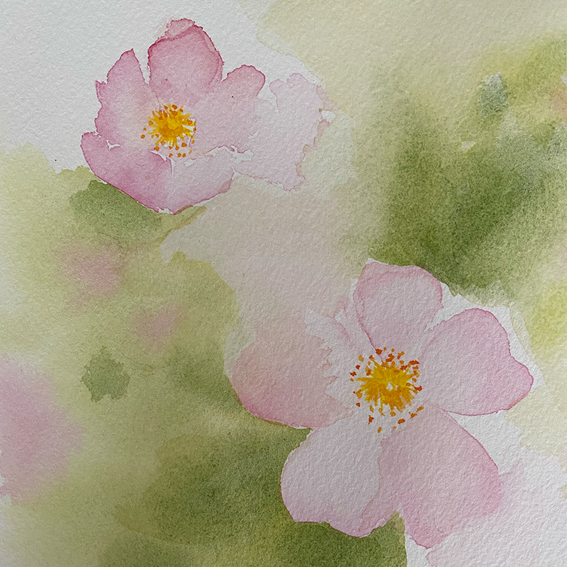

Rediscovering Tranquility Through Watercolor
Rediscovering Tranquility Through Watercolor
Watercolor painting has always been a source of relaxation and enjoyment for me. There's something incredibly soothing about the way the colors blend together and how the water helps create soft, fluid transitions on the paper. I often find myself painting scenes from the photographs I captured during my travels, which transports me back to those memorable moments. Each brushstroke brings back the sights, sounds, and emotions of those trips, making the experience of painting deeply personal and reflective.
Lately, however, I haven't had as much time to dedicate to this hobby. With a baby in my life, most of my free time is taken up with caring for him, leaving little room for much else. I miss the quiet moments when I could sit down with my brushes and lose myself in the colors and scenes of my travel memories. Painting provided me with a space to unwind and reflect, and I long for those peaceful hours again.
Despite the busyness of life now, I am hopeful and determined to set aside more time for painting in the future. I realize how important it is for me to have that creative outlet, not only as a form of relaxation but as a way to preserve the joy and beauty from my travels. I look forward to rekindling that passion and creating new pieces that continue to capture cherished memories.